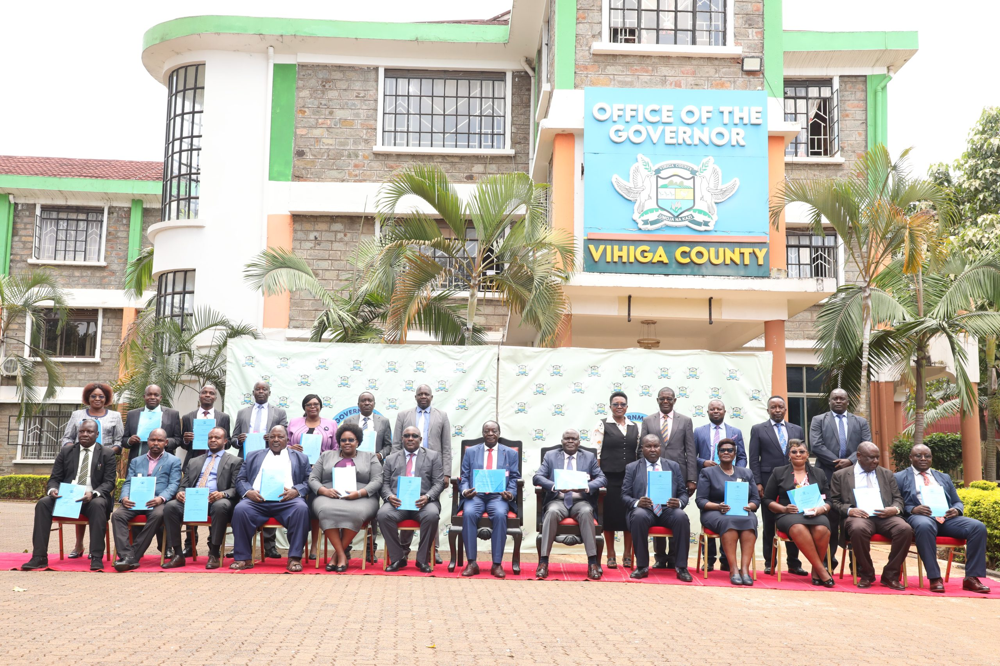

All Projects
15

This Vihiga County dashboard presents the Monitoring, Evaluation, Reporting and Learning (MERL) view of climate investment projects implemented within the County Government and aligned with national climate action priorities. It provides structured oversight of project implementation, financial performance, sectoral distribution, and beneficiary reach to strengthen transparency, accountability, and evidence-based decision-making.
Near–real-time insights on project performance, budget absorption, and service delivery outcomes across wards in Vihiga County.
Open Vihiga Dashboard
County Government of Vihiga – Department of Environment, Water, Energy,
Natural Resources & Climate Change, Directorate of Climate Change.
Filter by sector and quickly scan project budgets, timelines, and beneficiary households.
Expansion of Ebukhaya community water supply to increase access to safe and reliable water under climate stress.
Tender No: TENDER/VCG/ENV/002/2024-2025
Cost: Ksh 21,990,866.35 | Households: 345
Period: 2nd Sept 2024 – 2nd Dec 2024
Status: Completed, paid and in use; managed by a community management committee.
Climate-resilient water project providing household and community water security in Ekamanji area.
Tender No: TENDER/VCG/WATER/009/2024-2025
Cost: Ksh 12,598,740.00 | Households: 115
Period: 2nd Sept 2024 – 2nd Dec 2024
Status: Completed, paid and in use; managed by VIWASCO, the County Water Utility Company.
Construction of a climate-resilient community water scheme in Kaila to secure domestic and productive water use.
Tender No: TENDER/VCG/WATER/005/2024-2025
Cost: Ksh 16,200,000.00 | Households: 190
Period: 2nd Sept 2024 – 2nd Dec 2024
Status: Completed, paid and in use; managed by a community management committee.
Rehabilitation and restoration of seventy (70) acres of Maragoli Hills Forest to enhance ecosystem resilience and watershed protection.
Tender No: TENDER/VCG/WATER/001/2024-2025
Cost: Ksh 9,380,224.00 | Households: N/A
Period: 2nd Sept 2024 – 2nd Dec 2024
Status: Completed and paid; managed by the Kenya Forest Service.
Construction of Mutave–Jepesi bridge to improve connectivity, market access and disaster resilience for local communities.
Tender No: TENDER/VCG/WATER/006/2024-2025
Cost: Ksh 13,158,344.00 | Households: 5,000
Period: 2nd Sept 2024 – 2nd Dec 2024
Status: Completed, paid and in use.
Equipping, expanding, and solarizing the Vigina water project to enhance efficiency and reliability of supply.
Tender No: TENDER/VCG/WATER/008/2024-2025
Cost: Ksh 14,442,824.43 | Households: 143
Period: 2nd Sept 2024 – 2nd Dec 2024
Status: Completed, fully paid and in use.
Augmentation of Nadiradi community water system to strengthen climate-resilient water access for households.
Tender No: TENDER/VCG/WATER/007/2024-2025
Cost: Ksh 15,899,748.75 | Households: 213
Period: 20th Sept 2024 – 20th Dec 2024
Status: Completed, paid and in use.
Construction of Kaptik Mwala climate-resilient community water scheme to diversify water sources and strengthen resilience.
Tender No: TENDER/VCG/ENV/004/2024-2025
Cost: Ksh 22,337,766.00 | Households: 182
Period: 2nd Sept 2024 – 2nd Dec 2024
Status: Completed, paid and in use.
Climate-resilient community water project in Kegondi to support domestic, institutional and small-scale productive use.
Tender No: TENDER/VCG/WATER/003/2024-2025
Cost: Ksh 12,097,795.15 | Households: 135
Period: 2nd Sept 2024 – 2nd Dec 2024
Status: Completed, paid and in use.
Completion and commercialization of a climate-resilient apiculture enterprise to diversify livelihoods in South Maragoli.
Tender No: TENDER/VCG/WATER/222/2024-2025
Cost: Ksh 14,338,330.00 | Households: 180
Period: 14th Mar 2025 – 14th Jun 2025
Status: Works ongoing (about 70% complete); expenditure to date: Ksh 0.00.
Completion and commercialization of Buhani irrigation scheme to support climate-smart agricultural production.
Tender No: TENDER/VCG/239/2024-2025
Cost: Ksh 12,589,031.42 | Expenditure: Ksh 4,149,939.44
Period: 24th Apr 2025 – 24th Oct 2025
Households: 150 | Status: Completed.